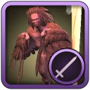

Talent
Pain Ward
Pain Ward is a level 8 talent of Vey the Pactbinder.
Pain Ward is a talent of Vey the Pactbinder, offered at player level 8 to the Thrall Binder and Golem Caller builds.
Description
Vey takes 15% less damage and gains 20% magic resistance.
What it changes
The commander: 15% less physical and magical damage taken, +20% magic resistance.
- The damage reduction applies to physical and magical damage. Pure damage is not reduced.
- The bonus is put on at the start of each fight and lasts the whole fight.
- A talent is kept for the rest of the match.
The choice
At each talent level you are shown the options for your build and keep one. Taking Pain Ward means giving up the other option of that level for the rest of the match.
| Build | Player level | Competes with | The alternative |
|---|---|---|---|
| Thrall Binder and Golem Caller | 8 |  Searing Torment | Vey also casts Searing Torment. |
The full ladders are on the talents page; the rules are on How commanders work.